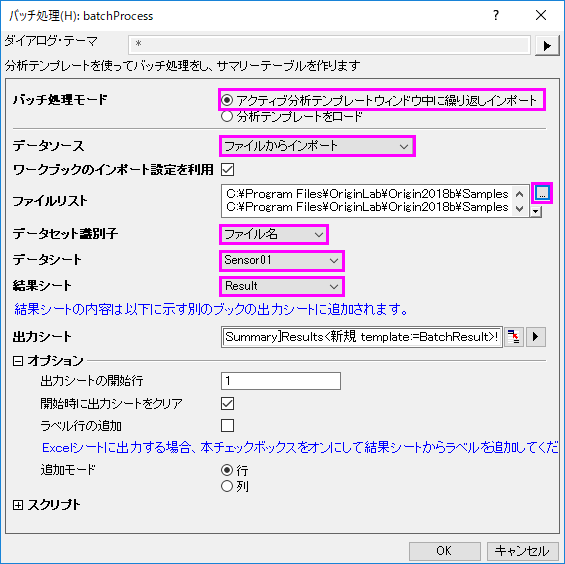
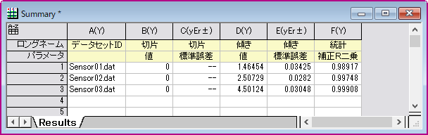

複数データセットのバッチ処理
サマリー
Originは、分析テンプレートを使用し、複数ファイルやデータセットに対してバッチ処理を実行できます。このチュートリアルでは現在アクティブなワークブック/分析テンプレートを用いた複数データセットのバッチ処理をご紹介します。
学習する項目
このチュートリアルでは、以下の項目について説明します。
- あるサンプルデータについて解析を行い、使用したい結果の結果シートを新たに作成します。
- 現在アクティブなワークブック（解析方法と再計算の設定を含む）を用いて複数データセットのバッチ処理を行います。
ステップ
データにフィットを実行する
- 新しいワークブックを作成し、
 のボタンをクリックします。<Origin EXE folder>\Samples\Curve Fitting\ フォルダを検索し、Sensor01.dat を選択して、分析用のデータをインポートします。
のボタンをクリックします。<Origin EXE folder>\Samples\Curve Fitting\ フォルダを検索し、Sensor01.dat を選択して、分析用のデータをインポートします。
- 列Bを選択し、解析：フィット：線形フィットメニューを選択し、線形フィット ダイアログを開きます。再計算を自動に設定します。フィット制御タブの 切片固定 にチェックを入れ、下の段の切片固定 欄に 0を入力します。
- 「OK」ボタンをクリックし、フィットを実行します。
- FitLinear1のシートに移り、概要欄の下向き矢印をクリックして、新しいシートとしてコピーを作成を選択します。フィット結果について「概要」という新しいシートが作成されます。シート名を"Result"に変更し、col(A)を削除します。
バッチ処理ツールを用いて複数データセットにフィットを行う
- ワークブックをアクティブにします。メニューからファイル：バッチ処理 を選択し、バッチ処理ダイアログを開きます。
- バッチ処理モードのアクティブ分析テンプレートウィンドウ中に繰り返しインポートにチェックを入れます。
Note:分析テンプレートを保存し、分析テンプレートをロードオプションから利用することもできます。
- データソースドロップダウンから、ファイルからインポートを選択します。
- ファイルリストセクションのブラウズボタンをクリックして、<Origin EXE フォルダ>\Samples\Curve Fitting フォルダから Sensor01.dat, Sensor02.dat and Sensor03.dat を選択します。
- データセット識別子として、ファイル名を選択します。
- データシートドロップダウンリストで、Sensor01が選択されていることを確認します。
- 結果シートドロップダウンリストで、Resultを選択します。

- OKをクリックします。全てのセンサのデータが分析され、 "Summary" というワークブックが作成されます。これは元のResult ワークシートの解析結果の概要に基づいています。
